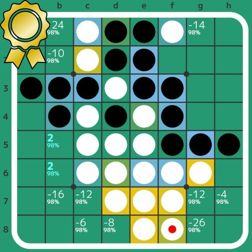
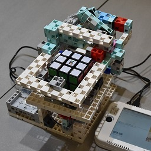
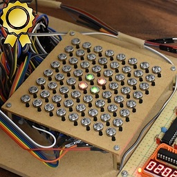
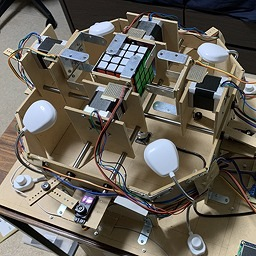
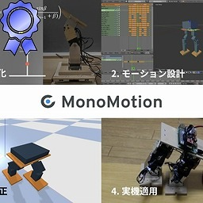

Home
Works
Exhibitions
Researches
Achievements
Contact
Tweet
日本語
Works

Egaroucid (2021-Now)
World's strongest Othello AI
CuYu2 (2024)
Puzzle-shaped musical instrument
Cotechnology (2023)
Parallel Othello AI with STM32
Winter Cherry Blossom (2023)
Mizuhiki Work
Past/Now/Future (2022)
Articles about relation between computers and humans through Computer Othello
Sounds of Othello (2022)
Musicalization of Othello
Isevot (2022)
Othello played by robots
Computer Othello (2022)
Retrofitting "Computer Othello" sold in 1980

Modified Rubik's Cube Solver Robo (2022)
Modification of commercialized robots
Egaroucen (2021-2022)
World's weakest Othello AI

Retro Othello AI (2021-2022)
Othello AI on 8-bit microcontrollers
Padurong (2021)
Handmade Face Turn Octahedron
CuYu (2021)
Rubik's-cube-shaped musical instrument
QiaoKe (2021)
Handmade 2x2x2 cube puzzle
Studth (2021)
Rubik's cube solving robot made of Artec Blocks
NyanTimer (2019-2021)
Timer for all cubers
NyanClock (2020-2021)
Handmade clock puzzle
Solock (2020)
A robot to solve a rubik's clock fastest in the world

Solvour (2020)
A robot to solve a 4x4x4 rubik's cube
Soltvvo (2020)
A robot to solve a 2x2x2 rubik's cube fastest in the world
Crange (2019)
Change the Color of Cubes in Videos

MonoMotion (2017-2019)
Robot motion creation support system
YamaX (2014-2019)
Handmade Humanoid robots
Yamamijuta-1 (2014)
Took part in RoboCup Junior Rescue A
Line Tracer (2014)
My first robot with Arduino